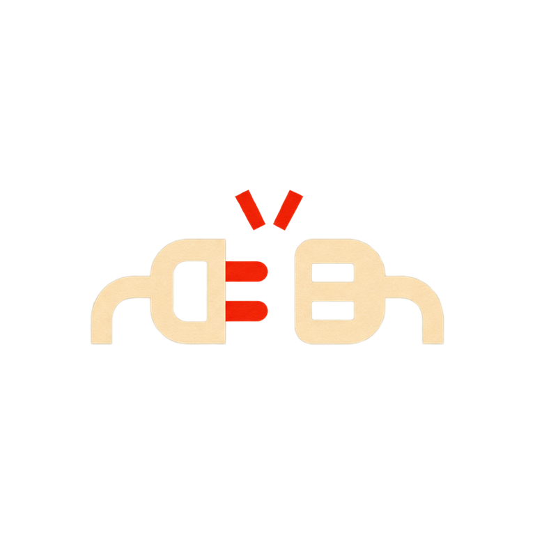

YouTube Shorts
Verificando…
Mesa de corte
Transforme os melhores momentos da sua live em vídeos verticais com legenda.
Sem precisar de administrador.
Conferindo espaço livre e preparando downloads…
Confira a conexão com a internet e clique em Instalar de novo — ele continua de onde parou.
Aguardando início…
Modo detectado automaticamente pelo instalador
Os vídeos aparecem aqui à medida que o CorteLive encontra e corta os melhores momentos.
Use sua assinatura do ChatGPT. As tarefas abrem no Codex Desktop com a pasta de cortes do CorteLive.
Apaga as mensagens antigas e os registros das lives que já terminaram. Seus vídeos e cortes não são apagados, e uma live em andamento não é afetada.
Cria um arquivo na Área de Trabalho com o registro do que aconteceu, para você mandar ao Gabriel pelo WhatsApp. Nada é enviado pela internet. Senhas, chaves, e-mails e o seu nome no Windows são apagados do arquivo. Seus vídeos não vão junto.
Escolha uma pasta sincronizada pelo Google Drive para computador. Depois, encontre os cortes nessa mesma pasta pelo celular.

Cortes com mais de 1 minuto podem ser monetizados. A escolha fica guardada.
Escolha se os novos cortes entram sozinhos na fila de publicação.
Os cortes agendados saem pelo Postiz mesmo com o PC desligado.
Conexão oficial para envio direto ao YouTube Shorts, Instagram Reels e TikTok.
Módulo de postagem em breve nesta instalação.
Para usar as contas oficiais de cada rede, conecte-as pelo Postiz.
Verificando…
Verificando…
Verificando…